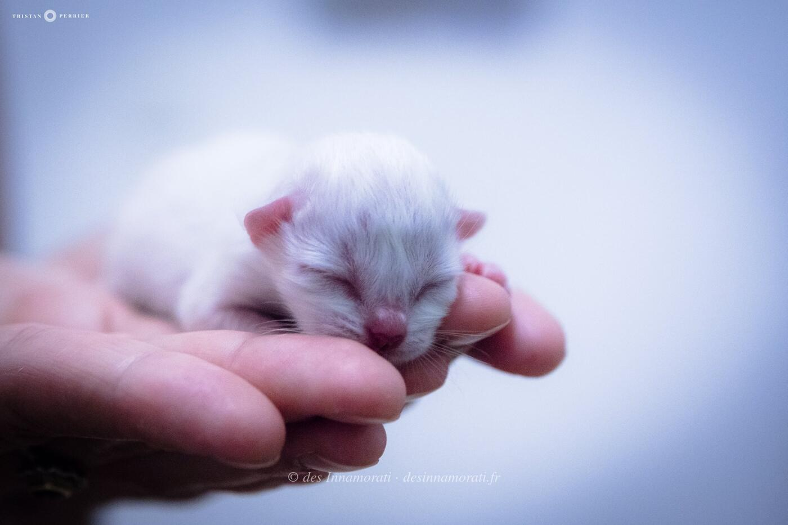


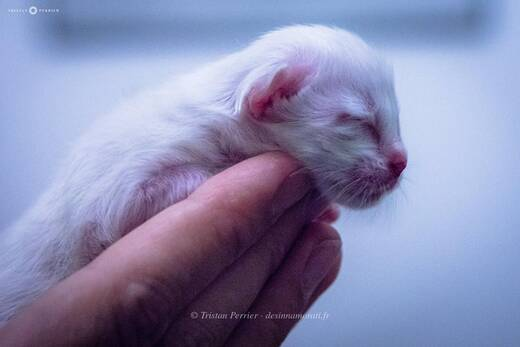


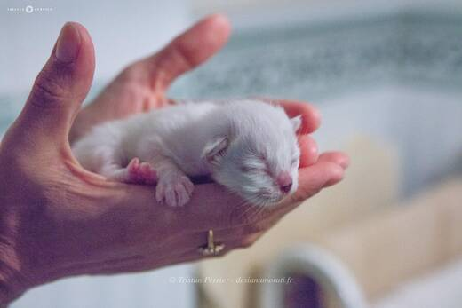

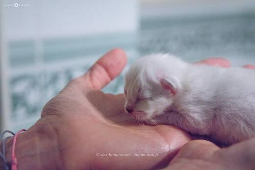


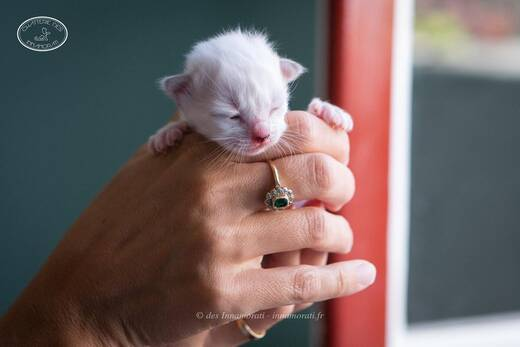


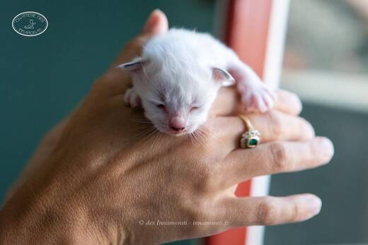


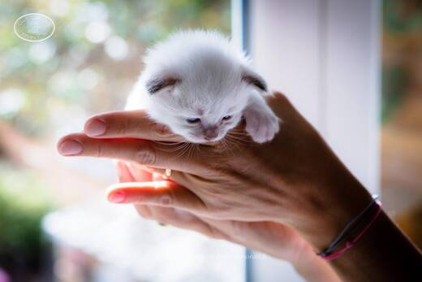


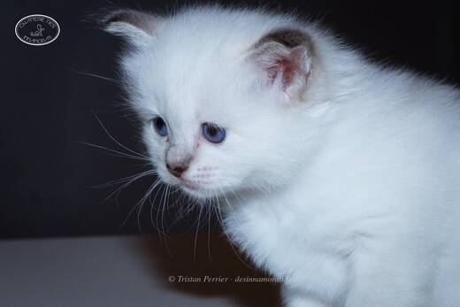


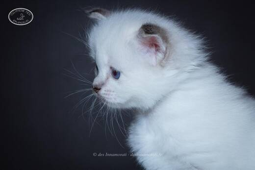

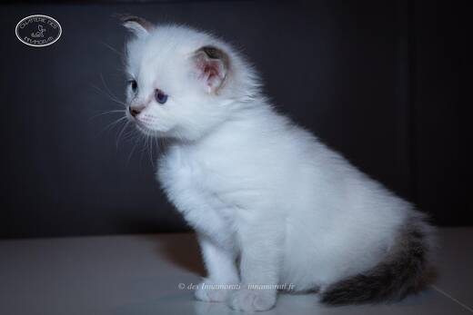

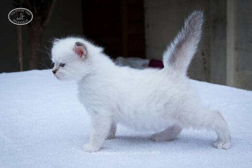

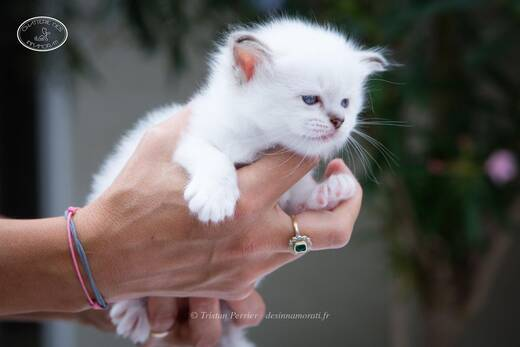


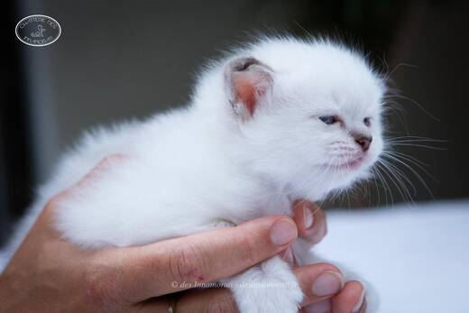


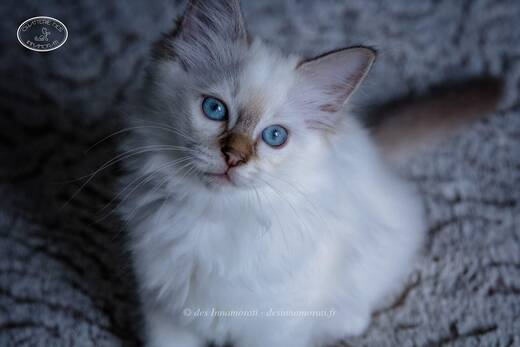


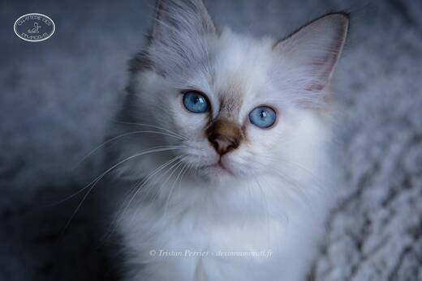

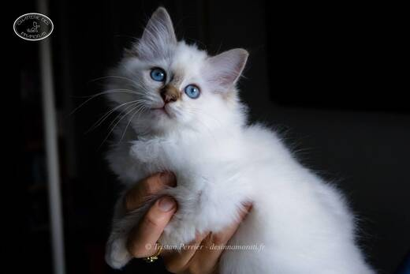

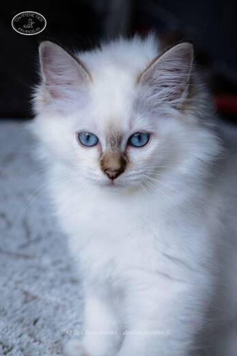

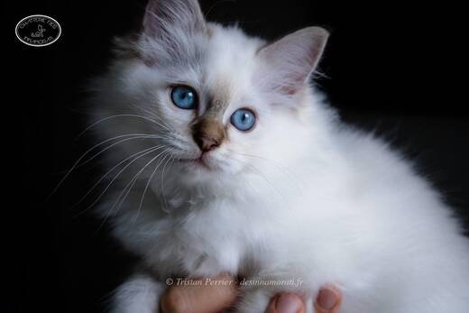


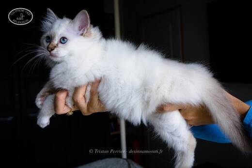

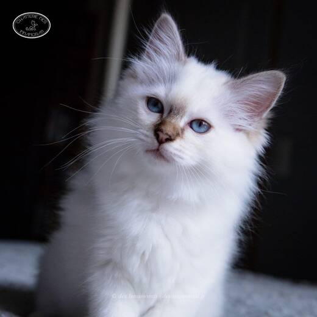

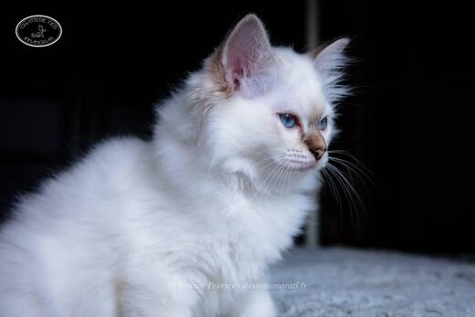

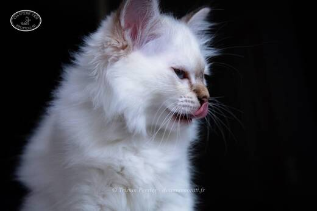


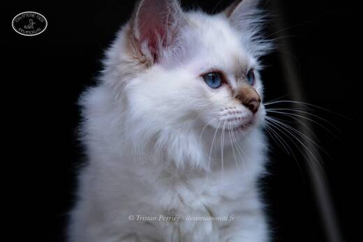

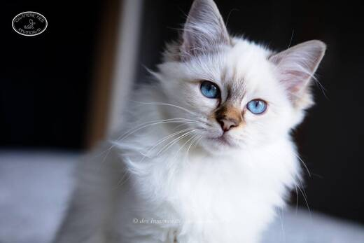

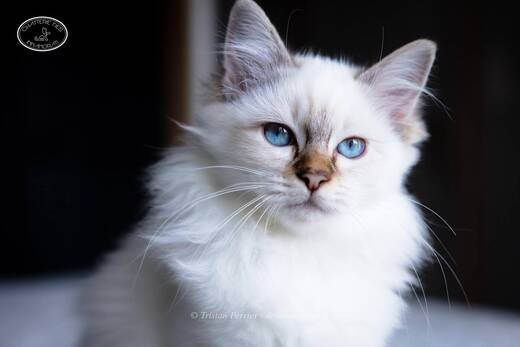

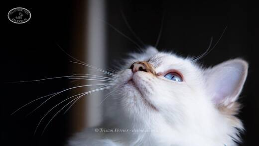

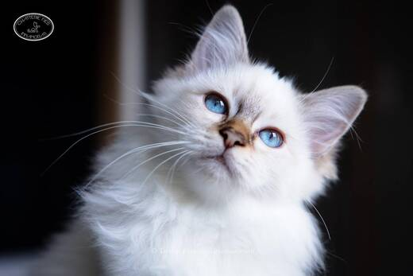

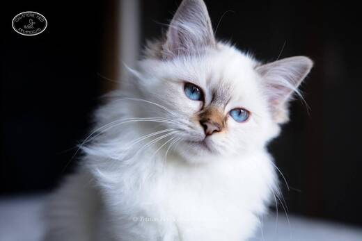

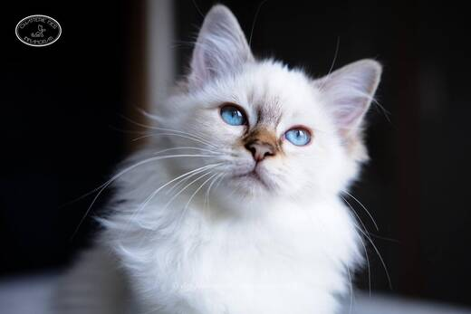

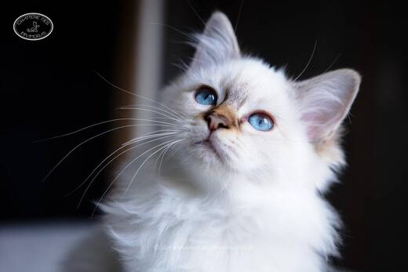


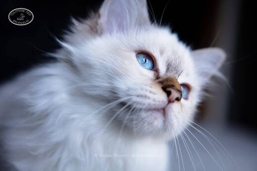


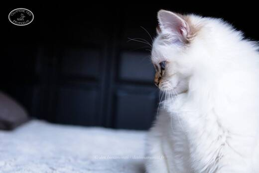


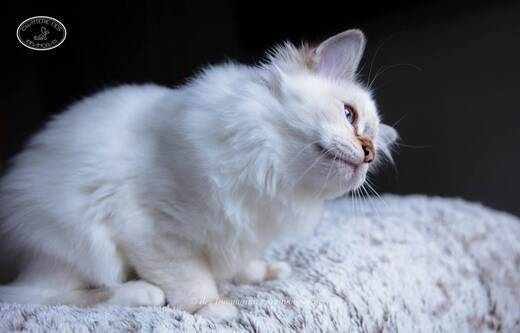

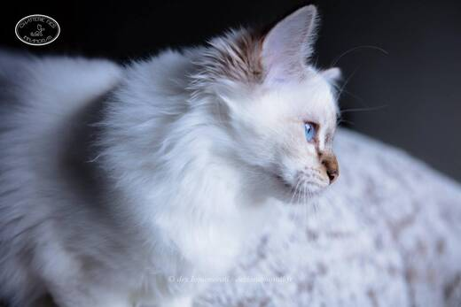


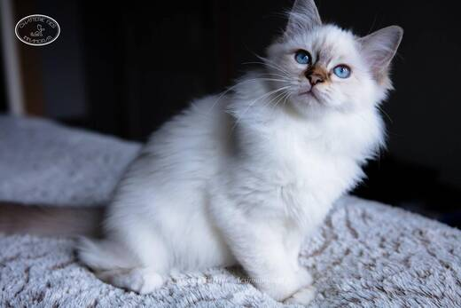

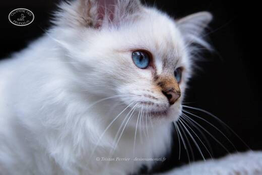

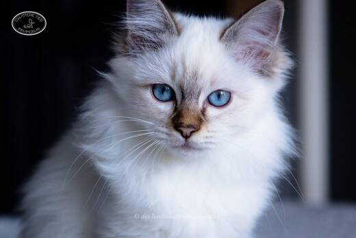


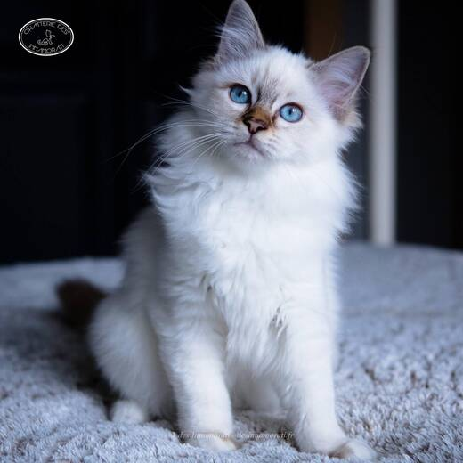


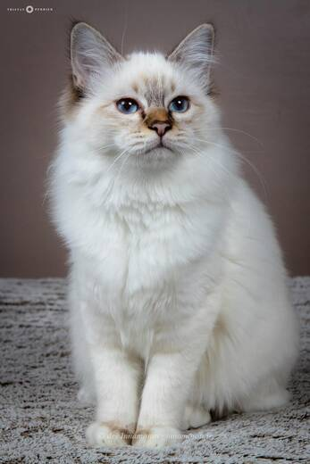

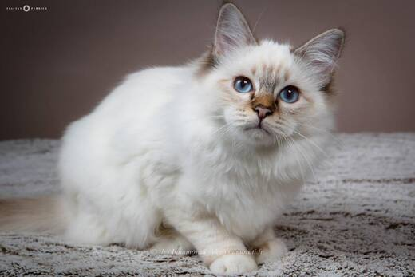

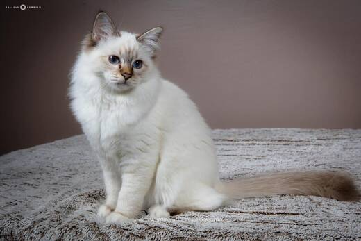

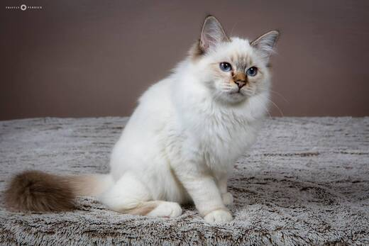

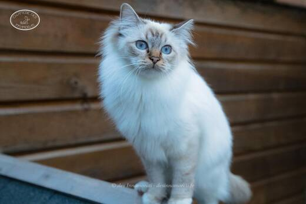
Palmarès
5 expositions · 9 jugements2017
- Le BarpCACIB
- BiarritzCACIB
- BiarritzCAC
- CastetsCAC
- CastetsCAC
- ParisEXC1
- ParisEXC1
2016
- BiarritzEXC1
- BiarritzEXC1 · BIV
EXC Excellent (classement) · CAC, CACIB, CAGCIB, CACS certificats de champion, champion international, grand champion international et suprême · CAP, CAPIB, CAGPIB, CAPS équivalents pour les chats stérilisés · BIV meilleur de la variété · NOM nommé pour le Best in Show · BIS Best in Show · BOB Best of Best, le meilleur de toute l’exposition
Photos réduites et marquées. Elles appartiennent à la Chatterie des Innamorati et ne peuvent pas être reprises dans une annonce.